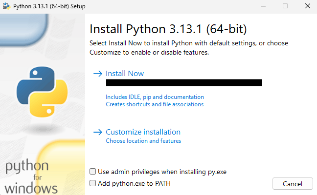
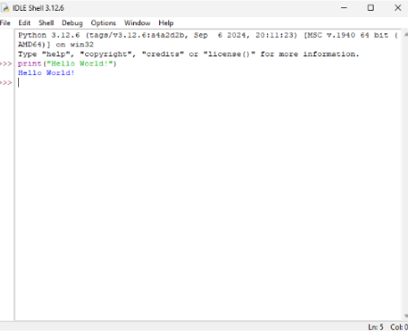
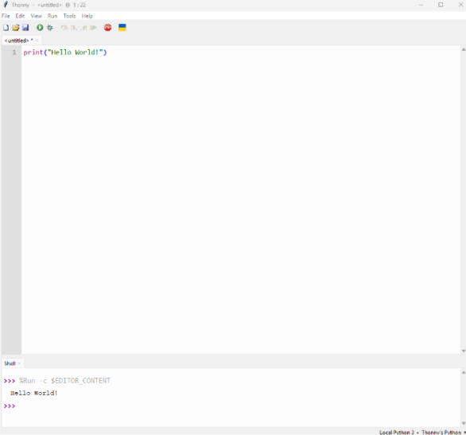
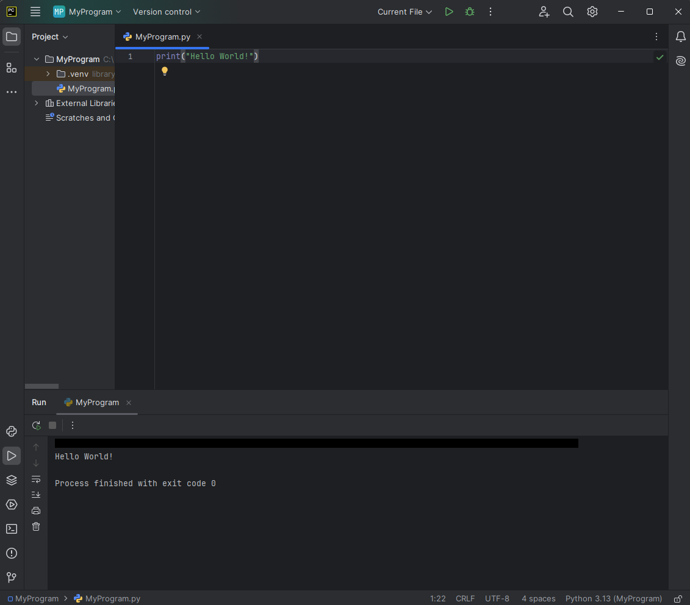
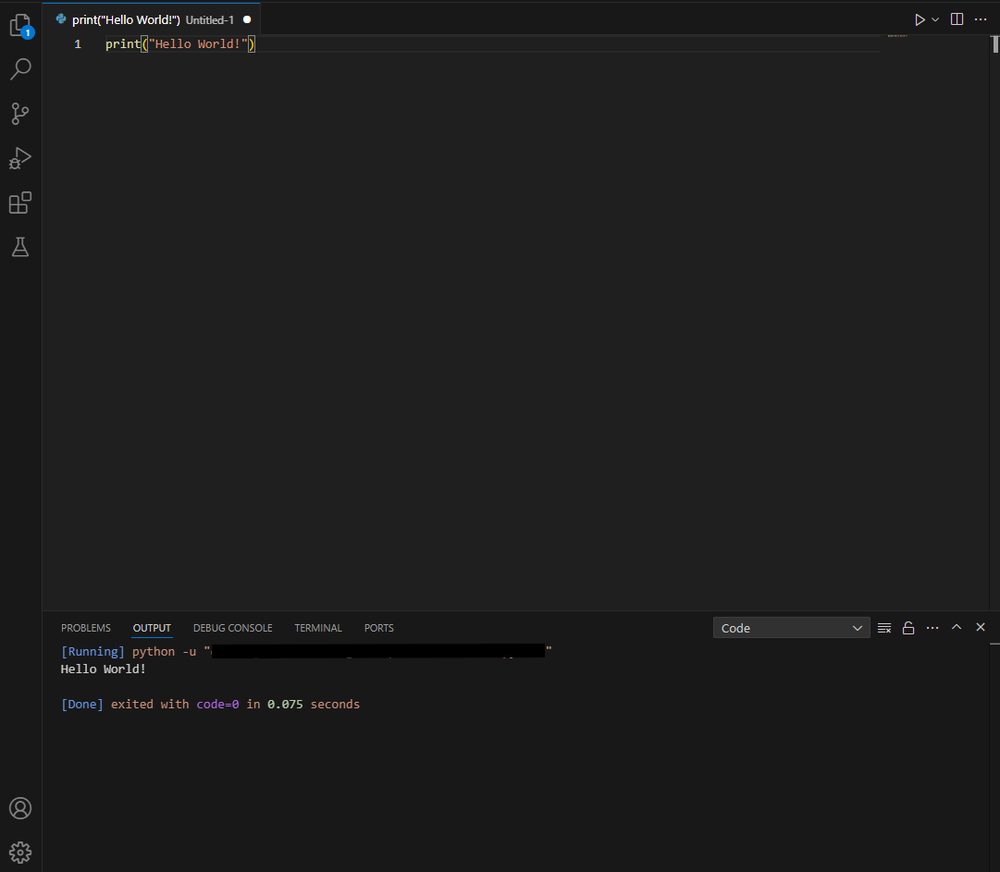

1. Introduction
Course Overview
- Introduction
- Syntax
- Comments
- Print Statement
- Data Types
- Variables
- Operators
- Conditions
- Data Structures
- Loops
- Functions
Intro
Python is one the most popular programming languages in the world because of its high versatility and ease. It can be found throughout many industries and companies. You can find Python being used for data analysis, machine learning, web development, software development, and more!
What are the aspects of python?
-
Interpreted
Python is an interpreted language, meaning that the code is read and executed by an interpreter rather than being compiled into machine code.
-
Object-oriented
Code can be organized in classes and objects, which allows for modular and reusable code. Object-oriented programming will not be covered in this course, but it is important to keep it in mind.
-
Both a programming language and a scripting language
Can be used to write scripts for automating tasks as well as to develop complex applications.
-
High-level
Python has simple and easy to read syntax with dynamic typing.
-
Easy to debug
Provides easy to read and detailed error messages.
If you do not know some of these terms, they will be covered in later sections.
Installing Python
Now that you know some background information about Python, it's time to install it!
The download links for Python for Windows, Linux/UNIX, and MacOS can be found on the official site.
Typically Python comes preinstalled with MacOS and is present on many linux distros. To check if Python is installed, go to the terminal and type python --version. Only the Windows download will be outlined here.
Getting the Installer
On the download page you can find the installers for all versions of Python. It is recommended to download the latest version as you have more features.
Running the Installer
Once downloaded, run the installer. You should see a pop-up like this.

It is recommended to select python.exe to PATH. This will allow you to use Python commands in your command-line. Once you have your settings right, select install now and python will be installed on your device.
What IDE to use?
Now that you have Python installed, you need something to edit Python files. An IDE (Integrated Development Environment) can provide you with a variety of tools to help you write code. Below you can find a list of some of the most commonly used IDEs for Python and the pros and cons they provide. It is recommended to explore a variety of IDEs in order to find the perfect one for your needs.
IDLE
IDLE comes bundled with the Python installation. It is very barebones, having basic syntax error detection, and limited customizability and features. It is perfect for beginners, but you may want to switch to a different IDE after learning the basics.
Thonny
Like IDLE, Thonny is also perfect for beginners, although there are more features and customizability with Thonny.
PyCharm
The community version is free, but the professional edition is paid. Pycharm has code analysis, refactoring, and error detection features. There are a variety of useful plugins and customizability available. It's usually used for more professional Python development.
Visual Studio Code
Visual Studio Code is the most versatile out of these listed. It can be used for all sorts of programming languages. It has thousands of plugins available and is highly customizable.